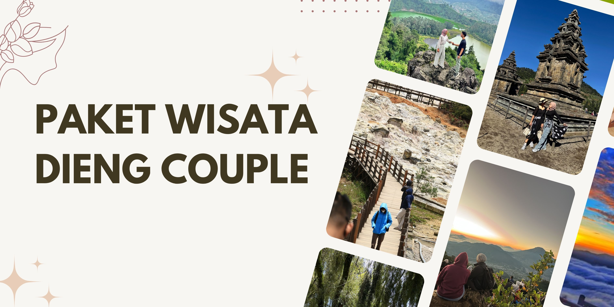

Paket Wisata Dieng Couple – Quality Escape untuk 2 Orang
Ingin quality time bareng pasangan, sahabat, atau rekan spesial? Paket Wisata Dieng Couple ini hadir untuk kamu yang ingin menikmati keindahan Dataran Tinggi Dieng berdua, dalam suasana tenang dan privat. Semua rencana perjalanan bisa disesuaikan, mulai dari one day trip yang praktis, dua hari satu malam untuk sensasi menginap di pegunungan, atau tiga hari dua malam biar liburan makin santai dan maksimal.
Kamu bisa atur itinerary sesuai selera: pilih sunrise Sikunir yang legendaris, rileks di kawah dan telaga, menikmati suasana heritage candi, sampai wisata kuliner dan berburu spot foto instagramable di setiap sudut Dieng. Semua rute dirancang agar perjalanan tetap personal, fleksibel, dan jauh dari keramaian. Setiap detail perjalanan didampingi tim lokal berpengalaman yang selalu menjaga privasi dan kenyamanan selama trip.
Untuk akomodasi, kamu bisa request kamar privat di homestay/hotel pilihan dengan fasilitas lengkap. Transportasi juga disiapkan khusus untuk dua orang, tanpa gabung dengan rombongan lain. Paket ini cocok buat pasangan, sahabat, atau siapa pun yang ingin rehat sejenak dari rutinitas harian dan mencari suasana baru yang lebih segar di dataran tinggi.
Setiap hari sudah termasuk layanan makan (bisa request menu), tiket wisata, dokumentasi foto basic, dan tour leader yang ramah. Kamu juga bebas request penjemputan dari kota manapun di Jawa Tengah & DIY — mulai dari Wonosobo, Semarang, Jogja, Purwokerto, Solo, hingga area hotel/bandara/stasiun yang kamu pilih.
Tidak perlu khawatir soal cuaca atau detail teknis lainnya, semua kebutuhanmu akan dibantu tim profesional yang sudah terbiasa menangani trip privat berdua. Pengalaman liburan lebih berkualitas dan memorable dijamin siap jadi cerita seru setelah pulang nanti.
Pilihan Paket & Durasi
- Paket 1 Hari: Trip singkat, cocok untuk kamu yang hanya punya waktu sehari. Semua destinasi utama Dieng bisa dikunjungi tanpa perlu menginap.
- Paket 2 Hari 1 Malam: Menginap di Dieng, suasana pagi dan malam khas pegunungan bisa kamu nikmati bersama. Waktu lebih longgar untuk eksplorasi.
- Paket 3 Hari 2 Malam: Untuk pengalaman lengkap, kamu bisa eksplor lebih banyak destinasi dan punya waktu santai tanpa terburu-buru.
Fasilitas Paket Couple
- Transportasi khusus 2 orang (mobil, driver & BBM)
- Akomodasi privat (homestay/hotel sesuai permintaan)
- Layanan makan sesuai itinerary (bisa request menu tertentu)
- Tiket masuk destinasi wisata pilihan
- Tour leader/pemandu khusus (tidak digabung dengan grup lain)
- Dokumentasi foto basic
- Air mineral setiap hari
- Parkir, tol, retribusi (sudah termasuk)
- Bebas request penjemputan dari kota atau titik manapun di Jawa Tengah & DIY
Rekomendasi Destinasi & Aktivitas
- Sunrise Bukit Sikunir
- Telaga Cebong
- Kawah Sikidang
- Komplek Candi Arjuna
- Batu Ratapan Angin
- Dieng Plateau Theater
- Taman Pintu Langit
- Pemandian Air Panas
- Kahyangan Skyline
- Dieng Park
- Bukit Scooter (sore/sunset)
- Air Terjun Sikarim
- Telaga Menjer
- Perkebunan Teh
- Sentra Oleh-oleh & Kuliner
- Chill di cafe atau area hits Dieng
Semua destinasi di atas bisa kamu pilih dan atur ulang sesuai keinginan. Kamu juga bebas request aktivitas khusus seperti piknik privat, prewedding casual, atau sekadar healing santai di spot favorit.
Panduan Trip Couple Dieng
Dieng selalu punya nuansa spesial untuk dinikmati berdua. Suhu cenderung sejuk bahkan dingin, jadi jangan lupa bawa jaket, outfit nyaman, dan perlengkapan pribadi sesuai kebutuhan. Trip ini didesain privat agar kamu bebas mengatur waktu, itinerary, dan agenda tanpa pressure dari peserta lain. Jika ingin durasi lebih lama atau request destinasi tertentu, cukup konsultasikan ke tim sebelum berangkat.
FAQ Paket Dieng Couple
Bisa pilih destinasi sendiri?
Bisa, itinerary bisa diatur sesuai request — bebas pilih destinasi favorit atau ikuti rekomendasi pemandu.
Penjemputan bisa dari mana saja?
Bisa, penjemputan fleksibel dari Wonosobo, Jogja, Semarang, Purwokerto, Solo, bandara, stasiun, atau hotel di Jawa Tengah & DIY.
Apakah hanya untuk pasangan?
Tidak, paket ini juga cocok untuk sahabat, teman, atau keluarga berdua yang ingin suasana privat dan tenang.
Bisa request durasi dan aktivitas?
Bisa, kamu bebas atur durasi, aktivitas, bahkan request sesi foto khusus atau itinerary yang tidak biasa.
Termasuk makan dan penginapan?
Sudah termasuk makan dan akomodasi privat, semua bisa diatur sesuai preferensi peserta.